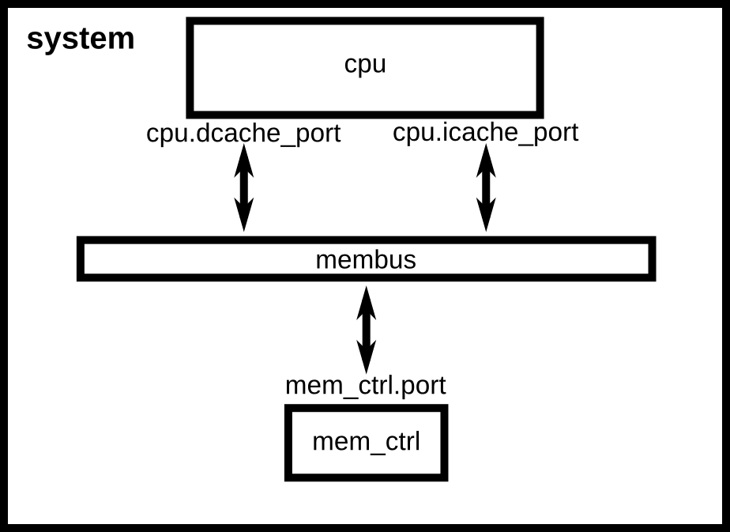
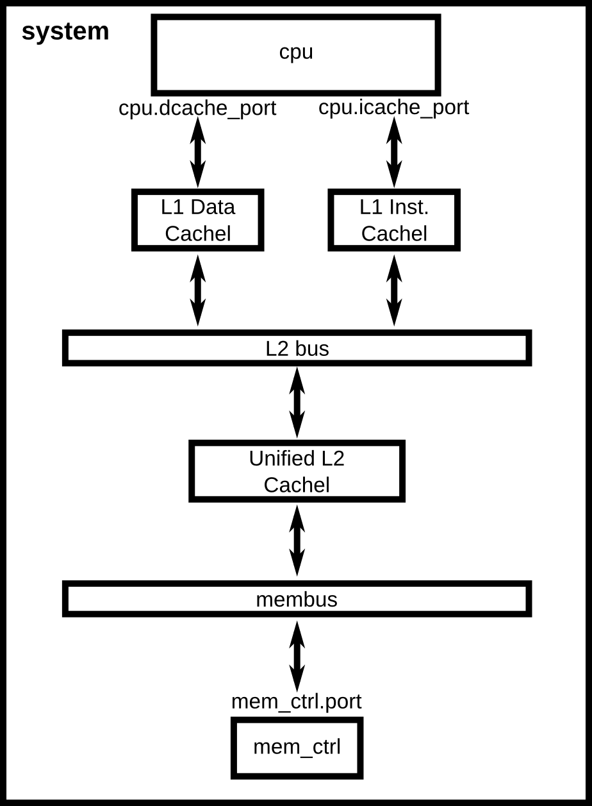
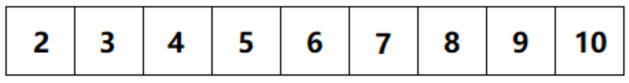
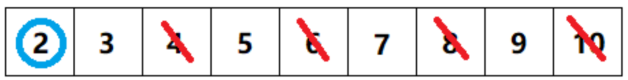
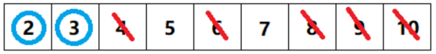
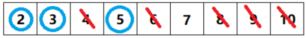
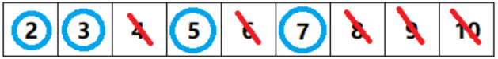

Lab 1：gem5 模拟器入门
实验目标
gem5 是一个开源的计算机体系结构模拟器，官方对它的定义是：
gem5 is a modular discrete event driven computer system simulator platform. —— Learning gem5: Introduction
这句话里有三个关键词。模块化（modular）：系统由可替换、可重新参数化的部件搭成；离散事件驱动（discrete event driven）：时间以事件为单位推进，而不是按真实时钟流逝；平台（platform）：gem5 提供的是一堆预制部件，而不是一个固定的模拟器。
gem5 由 C++ 和 Python 两部分组成：C++ 负责底层部件的时序行为，Python 负责描述"这台机器由哪些部件构成、怎么连接、参数是多少"。正因为这种分工，探索不同的 SoC 架构——加速器性能、互连拓扑、存储带宽——通常只需要改 Python 配置脚本，而不必改动模拟器本身。
gem5 有两种运行模式：全系统模式（FS mode）模拟包含设备和操作系统的完整系统；系统调用仿真模式（SE mode）只运行用户态程序，系统调用由模拟器直接代为完成。本次实验全程使用 SE 模式。
完成本次实验后，你应当能够：
- 在 Linux 环境下从源码编译 gem5；
- 读懂 gem5 的 Python 配置脚本，理解 SimObject、端口（port）与内存系统的连接关系，并能按需修改；
- 把自己编写的程序作为负载在 gem5 上运行，从
stats.txt中提取统计量，并用它回答一个具体的架构设计问题。
一、环境准备
gem5 只能在 Linux 下编译运行。本讲义的依赖列表、编译命令和全部实验数据都是在 Ubuntu 22.04 上验证的。其他发行版或版本的包名、依赖版本可能有差异，需要自行解决。
Windows 用户常见的三种做法，本实验都接受，请自行选择：
| 做法 | 特点 |
|---|---|
| WSL2 | 编译速度接近原生，可直接配合 VS Code 使用，安装也最省事 |
| 虚拟机（VMware / VirtualBox） | 配置简单，但编译较慢 |
| 双系统 | 性能最好，但安装麻烦、切换需要重启 |
如果你已经有可用的 Linux 环境（实验室服务器、云主机等），直接用即可。
关于 WSL2
安装方法可以参考微软官方文档：
两点补充：
- 安装时可以直接指定本实验验证过的发行版：
wsl --install -d Ubuntu-22.04；装好后用wsl -l -v确认VERSION一列是2。 - 预留磁盘空间：gem5 源码加编译产物大约需要 7 GB。WSL 默认装在 C 盘，如果 C 盘紧张，可按上面第二篇文档里
wsl --manage的说明把发行版迁到其他盘。
二、安装 gem5
官方 Building 页的依赖列表在 Ubuntu 22.04 上装不上
gem5 官方文档 Building gem5 给出的依赖命令里包含 python-dev 和 python 两个包，它们在 Ubuntu 20.04 之后已经不存在，照抄会导致整条 apt install 失败。该页面至今未更新。
请使用下面这份在 Ubuntu 22.04 上实测通过的列表。本实验中凡遇到本讲义与官方文档冲突之处，以本讲义为准。
1. 安装依赖
sudo apt-get update
sudo apt-get install -y \
build-essential scons python3-dev git m4 \
zlib1g zlib1g-dev libprotobuf-dev protobuf-compiler libprotoc-dev \
libgoogle-perftools-dev libboost-all-dev libhdf5-serial-dev \
libcapstone-dev libpng-dev libelf-dev pkg-config \
python3-venv wget cmake
apt 下载慢？
国内网络下建议先更换为国内镜像源（清华 TUNA、阿里云、华为云均可），参考清华镜像源帮助页面。
2. 获取源码
gem5 的默认分支是滚动更新的，直接 git clone 取到的代码随时间变化，可能与本讲义对不上。本讲义的全部命令、输出和实验数据都基于 release v25.1.0.1（对应 commit c8222cc），请指定这个版本：
--depth 1 表示只取这个版本的快照、不下载完整提交历史，可以省下大量时间和流量。
clone 失败或过慢
如果 git clone 中途报 RPC failed / early EOF，可以改为直接下载同一版本的压缩包（约 16 MB）：
怎么确认版本对不对
gem5 没有 --version 选项，但每次运行都会在输出开头打印版本号：
3. 编译
-j 后面是并行编译的任务数，一般取 CPU 核心数。
编译成功的标志是最后出现这一行，且没有 scons: *** 开头的报错：
编译很慢，但不是卡死了
编译过程中终端长时间没有新输出是正常的。助教在 64 核服务器上实测耗时 37 分钟，普通笔记本请按 1.5~2 小时预期。
不要照抄官方文档的编译目标
官方文档编译的是 build/ALL，包含全部 ISA 和全部 Ruby 一致性协议，比 build/X86 慢得多。本实验只用 X86，请照上面写。
三、实验任务
本次实验共三个任务，分别对应三个层次：完整运行 gem5（任务 1）、改动 gem5 配置（任务 2）、基于 gem5 仿真器做简单的架构探索（任务 3）。
任务 1：跑通第一个仿真
gem5 源码自带一个已经编译好的测试程序 tests/test-progs/hello/bin/x86/linux/hello，不需要你自己编译。
先用官方提供的最简配置脚本运行它：
这个配置里只有一个 CPU、一条内存总线和一个内存控制器，没有任何 cache：

图 1 simple.py 所描述的系统结构。图片来自 gem5 官方文档 Creating a simple configuration script。
留意输出末尾的这两行：
再用带两级 cache 的配置跑同一个程序：
这个配置在 CPU 和内存总线之间插入了 L1 指令 cache、L1 数据 cache 和一个统一的 L2 cache：

图 2 two_level.py 所描述的系统结构。图片来自 gem5 官方文档 Adding cache to the configuration script。
请把两次运行的完整输出留下来。
除了终端输出，gem5 每次运行还会在 m5out/ 目录下留下几个文件，本实验会反复用到其中两个：
| 文件 | 内容 |
|---|---|
stats.txt |
本次仿真的全部统计量 |
config.ini |
本次仿真中所有部件的参数快照 |
打开 m5out/stats.txt，找到开头的 simSeconds、simTicks 和 simFreq 三行——它们能说明 tick 究竟是什么单位。
m5out/ 会被下一次运行覆盖
gem5 默认总是输出到 m5out/，所以跑完 two_level.py 之后，m5out/ 里已经是第二次运行的结果了。要同时保留多次运行的结果，用 --outdir 指定不同的输出目录：
注意 --outdir 是 gem5 自己的选项，必须写在配置脚本路径之前；写在后面会被当成传给脚本的参数。后面的任务会经常用到它。
任务 2：读懂并修改配置脚本
gem5 的配置脚本描述的是"这台机器由哪些部件组成、怎么连起来"。本任务分三步：先读懂脚本（2.1），再动手给它加一个新参数（2.2），最后验证（2.3）。
开始之前，请打开 configs/learning_gem5/part1/simple.py 和 two_level.py，对照上面两张图通读一遍，重点看清楚：
System、SrcClockDomain、MemCtrl、X86TimingSimpleCPU这些 SimObject 分别扮演什么角色；- 端口是怎么连的：
cpu.icache_port、membus.cpu_side_ports、membus.mem_side_ports之间的连接关系； - 对照图 1 和图 2，
two_level.py比simple.py多做了什么，才把 cache 插进 CPU 和内存总线之间。
官方文档的 Creating a simple configuration script 和 Adding cache to the configuration script 两页逐行讲解了这两个脚本，可以参照阅读。
2.1 脚本已经支持哪些参数
先看看 two_level.py 接受哪些参数：
输出是：
usage: two_level.py [-h] [--l1i_size L1I_SIZE] [--l1d_size L1D_SIZE]
[--l2_size L2_SIZE]
[binary]
positional arguments:
binary
options:
-h, --help show this help message and exit
--l1i_size L1I_SIZE L1 instruction cache size. Default: 16KiB
--l1d_size L1D_SIZE L1 data cache size. Default: 64KiB
--l2_size L2_SIZE L2 cache size. Default: 256KiB
也就是说，三个 cache 的容量已经是可配置的了：
| 参数 | 默认值 |
|---|---|
--l1i_size |
16 KiB |
--l1d_size |
64 KiB |
--l2_size |
256 KiB |
任务 3 要用的 --l2_size 就在其中，不需要你添加，直接用即可。
值得注意的是，打开 two_level.py 你会发现这三个参数在里面一行都找不到——它自己只声明了一个位置参数 binary。它们实际上声明在同目录的 caches.py 里，而且是写在 cache 类的类体中：
class L2Cache(Cache):
"""Simple L2 Cache with default values"""
# Default parameters
size = "256KiB"
...
SimpleOpts.add_option("--l2_size", help=f"L2 cache size. Default: {size}")
SimpleOpts 内部持有一个模块级的 ArgumentParser，所有配置脚本共用它。two_level.py 开头有一行 from caches import *，导入时 caches.py 的类体会被执行，这三个 add_option 就注册进了那个共享的 parser——所以命令行上写 --l2_size 才能生效。2.2 里你要添加的参数用的是同一套机制。
2.2 动手：让脚本能把参数传给被模拟的程序
two_level.py 目前只能运行不带参数的程序。注意它的这一行：
process.cmd 就是被模拟程序看到的 argv，现在它只有 argv[0]——也就是说，凡是需要靠命令行参数来控制行为的程序（比如控制问题规模的程序），这个脚本都没法正确地把它跑起来。要给脚本补上这个能力。
把 two_level.py 复制一份为 two_level_args.py（必须放在同一目录 configs/learning_gem5/part1/ 下），然后做两处修改：
- 声明一个新的位置参数，用来接收要传给被模拟程序的若干个参数。写法仿照
caches.py里--l2_size那一行； - 修改
process.cmd，把这些参数接在args.binary后面。
关于 SimpleOpts.add_option() 怎么用——看它的实现就明白了（configs/common/SimpleOpts.py）：
parser = ArgumentParser()
def add_option(*args, **kwargs):
"""Call "add_option" to the global options parser"""
if called_parse_args:
m5.fatal("Can't add an option after calling SimpleOpts.parse_args")
parser.add_argument(*args, **kwargs)
它就是 argparse 的 add_argument() 的透传，只是名字叫 add_option，并且所有脚本共用同一个模块级 parser（就是 2.1 里说的那个）。因此 argparse 的全部用法都适用。
本题的关键在于：你要接收的是数量不定的若干个参数（可能一个，也可能一个都没有）。请查阅 argparse 文档中 add_argument() 的 nargs 参数，选择合适的取值，并注意设置默认值。
声明必须写在 parse_args() 之前
two_level.py 中有一行 args = SimpleOpts.parse_args()。在它之后再调用 add_option() 会直接 m5.fatal 退出，报错 Can't add an option after calling SimpleOpts.parse_args。你新加的声明必须在这一行之前。
2.3 验收
仍然用任务 1 的 hello 作为负载。hello 自己不读 argv，多给它几个参数它也照样打印 Hello World!，所以不能靠终端输出来判断参数有没有传进去——要看 gem5 的另一个输出文件 config.ini。
gem5 每次运行都会在输出目录里生成 config.ini，它是本次仿真中所有 SimObject 的完整参数快照，其中就包括 Process 的 cmd。在 gem5 根目录下运行：
./build/X86/gem5.opt --outdir=m5out_args \
configs/learning_gem5/part1/two_level_args.py --l2_size=1MB \
tests/test-progs/hello/bin/x86/linux/hello 12345 foo
grep '^cmd=' m5out_args/config.ini
应当输出：
cmd= 对了，说明脚本改成功了。顺便在同一个 config.ini 里找到 [system.l2cache] 段，确认它的 size=1048576（1 MiB，默认值是 262144 即 256 KiB）——这说明 --l2_size 确实作用到了硬件配置上，而不只是被 argparse 解析了一下。任务 3 会大量依赖这一点。
三个容易卡住的地方
binary是位置参数，不是--binary。写成--binary=.../hello会被 argparse 拒绝。- 新脚本必须放在
configs/learning_gem5/part1/目录下，因为它开头有from caches import *。放到别处运行会报ModuleNotFoundError: No module named 'caches'。 binary和你新加的参数都是位置参数。argparse 在处理多个位置参数时有确定的匹配规则，如果发现cmd=里argv[0]的值不对（比如hello跑到后面去了，或者 gem5 报找不到可执行文件），检查一下两者的声明顺序和nargs取值。
任务 3：用模拟器做一次设计空间探索
前两个任务都是在跑现成的仿真器配置。这个任务里，我们用 gem5 回答一个真实的 SoC 设计问题：这个负载应该配多大的 L2 cache？
3.1 关于负载：埃拉托色尼筛法
本次实验使用的负载是埃拉托色尼筛法（Sieve of Eratosthenes），由古希腊数学家埃拉托色尼提出，用于求出 [2, N] 区间内的全部素数。算法流程很简单：
- 将 [2, N] 从小到大排成一行；
- 标出列表中第一个未被筛去的数，它是素数，然后筛去它的所有倍数；
- 重复第 2 步，最后被标出的就是 [2, N] 内的所有素数。
以 N = 10 为例：
a. 将 [2, 10] 排成一行

b. 标出第一个数 2，筛去所有 2 的倍数

c. 标出下一个未被筛去的数 3，筛去所有 3 的倍数

d. 标出 5，筛去所有 5 的倍数

e. 标出 7。此时所有被标出的数 2、3、5、7 就是 [2, 10] 内的全部素数

选这个算法作为负载，是因为它有两个对本实验很有用的性质：结果有明确的正确性判据（素数个数是确定的），以及它的访存行为集中在一个大小完全可控的数组上——这正是任务 3 要观察的东西。
3.2 准备负载
把上面的算法写成 sieve.cpp：
#include <cstdio>
#include <cstdlib>
#include <vector>
int main(int argc, char *argv[]) {
int N = (argc > 1) ? std::atoi(argv[1]) : 10000;
std::vector<char> composite(N + 1, 0);
int count = 0;
for (int i = 2; i <= N; ++i) {
if (!composite[i]) {
++count;
for (long long j = (long long)i * i; j <= N; j += i)
composite[j] = 1;
}
}
printf("primes below %d: %d\n", N, count);
return 0;
}
为什么用 vector<char> 而不是 vector<bool>
C++ 标准库会把 vector<bool> 按 bit 打包，工作集会缩小 8 倍，本任务要观察的现象就被掩盖了。请照上面写。
先在本机直接运行，确认结果正确：
| N | 正确输出 |
|---|---|
| 10,000 | primes below 10000: 1229 |
| 200,000 | primes below 200000: 17984 |
| 2,000,000 | primes below 2000000: 148933 |
然后用任务 2 改好的脚本，在 gem5 上跑一次（约 1 分钟）：
输出里应当出现 primes below 200000: 17984。如果出现的是 primes below 10000: 1229，说明命令行参数没有真正传到被模拟的程序里——回到任务 2 检查 process.cmd。这个错误不会抛任何异常，参数是被默默忽略的，程序用的是它自己的默认值 10000。
3.3 先做一个简单估算
在跑任何仿真之前，先回答：当 N = 2,000,000 时，这个程序的主要工作集有多大？（提示：看 composite 这个数组占多少字节。）
根据你算出的工作集大小，预测：L2 cache 要多大，性能才会出现明显改善？把你的预测写下来。
3.4 扫描 L2 容量
用任务 2 改好的脚本，固定负载 N = 2,000,000，只改 L2 容量：
for L2 in 256kB 512kB 1MB 2MB 4MB 8MB 16MB; do
./build/X86/gem5.opt --outdir=out_L2$L2 \
configs/learning_gem5/part1/two_level_args.py \
--l2_size=$L2 ./sieve 2000000
done
每次运行约需 1 分钟。结果在各自 out_L2*/stats.txt 里，需要的统计量有三个：
| 统计量 | 含义 |
|---|---|
simSeconds |
被模拟机器上经过的时间（不是你等待的时间） |
system.cpu.dcache.overallMissRate::total |
L1 数据 cache 缺失率 |
system.l2cache.overallMissRate::total |
L2 缺失率 |
把七组数据整理成表格，并画出 simSeconds 随 L2 容量变化的曲线。
3.5 分析
请回答下面四个问题：
- 七次运行的 L1 数据 cache 缺失率是多少？为什么改 L2 容量不影响它？
- 曲线的拐点出现在哪个容量？这个位置和你在 3.3 里算出的工作集大小是什么关系？和你的预测一致吗？
- 拐点之后继续增大 L2，性能还有提升吗？请用数据说明。
- 如果你来设计这颗 CPU，只考虑这一个负载，你会选多大的 L2？
四、提交要求
交一个压缩包
打包成 Lab1_学号_姓名.zip，里面放两个文件：
| 文件 | 内容 |
|---|---|
Lab1_学号_姓名.pdf |
实验报告 |
two_level_args.py |
任务 2 中你写的配置脚本（文件名保持不变） |
提交至教学网。截止时间以教学网公告为准。
报告内容
按下面的顺序写即可。每一项都对应讲义里的一个位置，记录实验过程和结果即可。
0. 环境说明
- 用的是什么环境（WSL2 / 虚拟机 / 双系统）、发行版与版本
- gem5 版本、编译命令
- 安装过程中卡住的地方和你的解决办法；一路顺利就写"无"
1. 任务 1
simple.py与two_level.py两次运行的完整输出，必须包含Exiting @ tick ...那一行- 用一两句话回答：tick 是什么？和
stats.txt中的simSeconds关系是什么？为什么同一个程序加了 cache 之后 tick 数会降这么多？
2. 任务 2
- 你的改动：贴出
two_level_args.py相对two_level.py改动的那两处，并说明你为什么这样选nargs的取值 - 2.3 的验收输出：
config.ini中的cmd=行，以及[system.l2cache]段的size=
3. 任务 3
- 3.2 中在 gem5 上运行
./sieve 200000的输出 - 3.3 的计算与预测：工作集大小的计算过程（不是只给结果），以及你在看到任何仿真数据之前写下的预测
- 3.4 的数据表：七行，列为 L2 容量、
simSeconds、L1d 缺失率、L2 缺失率；以及simSeconds随 L2 容量变化的曲线图 - 3.5 四个问题的回答
其他说明
- 请自己运行仿真器得到实验数据。 仿真器版本不同导致数值有出入是正常的，趋势一致即可。
- 实验报告没有格式要求，记录实验过程和结果即可，但每一个结论都要有数据支撑。
五、参考资料
gem5 官方文档 Learning gem5 系列（英文）：
- Introduction —— gem5 是什么、两种运行模式、支持的 ISA 与 CPU 模型
- Building gem5 —— 编译流程与常见错误（⚠️ 依赖列表已过时，见第二节）
- Creating a simple configuration script —— 逐行讲解
simple.py - Adding cache to the configuration script —— 逐行讲解
two_level.py与caches.py - Understanding gem5 statistics and output ——
stats.txt中各统计量的含义
其他：
- gem5 官网 与 源码仓库；本实验使用的版本：v25.1.0.1
- 清华 TUNA 镜像源使用帮助
本讲义中的系统结构图（图 1、图 2）取自 gem5 官方文档。